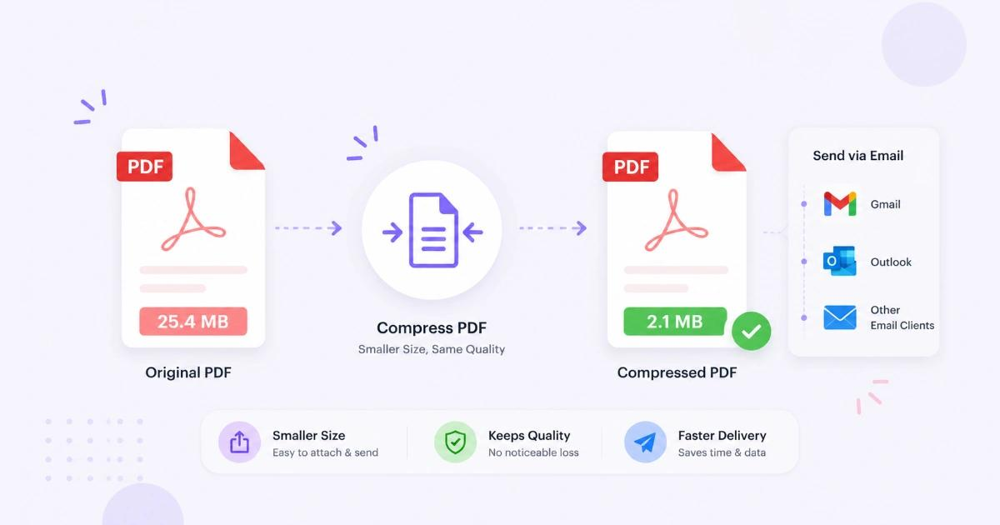
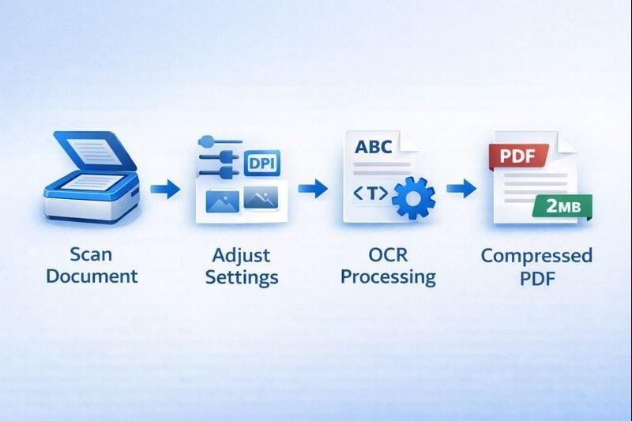
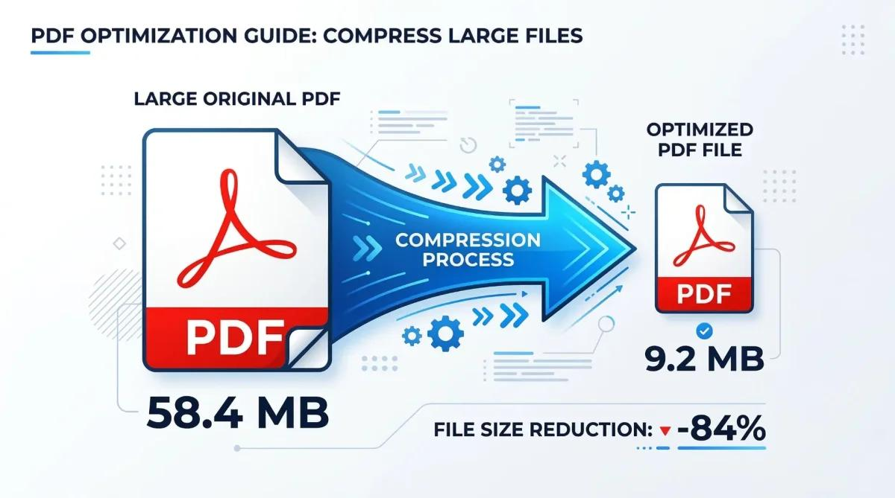
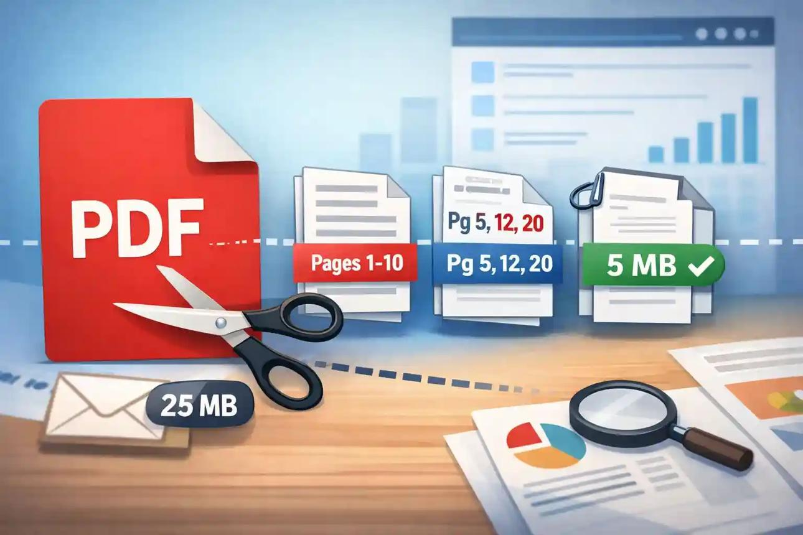

You finish preparing an important PDF, attach it to an email, and discover that the file is too large to send. You try compressing it, but the result is still too big. Sometimes the document becomes smaller, but its text or images lose quality.
The problem may not be the PDF as a whole. A few high-resolution scanned pages, embedded photographs, unnecessary duplicate pages, or an unsuitable export setting can account for much of a document's size.
The best way to reduce a PDF is to identify what is making it large before choosing a compression method. A scanned document needs a different approach from a PDF containing photographs, while a document with redundant pages may benefit more from cleanup than compression.
This guide explains how to diagnose the problem, reduce PDF file size while preserving readability, and decide when splitting the document or sharing a link is the better option.
Quick answer: What should you do if your PDF is too large to email?
Start by checking the PDF's actual file size and your email provider's attachment limit. Then identify what's inside the document.
- Scanned pages: Optimize the scanned images and resolution.
- Embedded photographs: Reduce unnecessary image resolution or adjust image compression.
- Duplicate or unnecessary pages: Remove them if they are genuinely redundant.
- PDF still too large after compression: Inspect the output and try a different optimization method.
- Document cannot be reduced enough: Split it into smaller PDFs or share it through a cloud storage link.
For example, personal Gmail accounts have a 25 MB attachment limit, while Outlook.com currently documents a 25 MB email limit. Limits can differ for business accounts, administrators, and other email services. Check the rules that apply to your account before deciding how small the file needs to be.
1. Check the email attachment limit first
Before changing your document, confirm how large an attachment your email service allows.
An email message can have a size limit that applies to the message as a whole, not just the PDF. This means that multiple attachments and message content may also affect whether the email can be sent. Business email accounts can have different limits configured by their administrators.
Common email attachment limits
| Email service or account | Published limit or guidance |
|---|---|
| Personal Gmail | Up to 25 MB in attachments |
| Outlook.com | 25 MB per email message |
| Outlook with a business account | Depends on the account type and administrator settings |
| Yahoo Mail | Up to 25 MB total attachments |
These figures are not universal limits for every account or configuration. Confirm your provider's current rules, especially if you use a company email address.
Why a PDF under the stated limit might still fail
Your email may include more than one attachment, or your organization's email system may enforce a lower limit. Some services also account for the message as a whole rather than the PDF's standalone size.
Practical tip: If your email limit is 25 MB, do not assume a PDF that is almost exactly 25 MB will always send successfully. Leave room for other attachments and message overhead.
If your PDF is already well below your email provider's limit, the issue might instead involve the recipient's system, a network problem, or another attachment restriction. Compressing the PDF further may not solve that particular problem.
2. Find out what is making your PDF so large
PDF files can contain text, fonts, vector graphics, photographs, scanned page images, and other embedded resources. The contents and how they are encoded affect the total file size.
Use this table to identify the most likely cause before changing the document.
| What you notice | Possible cause | Best first step |
|---|---|---|
| The PDF is a scan of paper documents | High-resolution page images | Optimize the scanned pages |
| The PDF contains many photographs | Large embedded image data | Reduce image resolution or adjust compression |
| The PDF contains repeated pages | Redundant content | Remove verified duplicate pages |
| Compression barely changes the size | Already-optimized content or unsuitable settings | Inspect the PDF and try another method |
| Only a few pages contain large images | A small number of pages dominate the file | Optimize those pages if your software supports it |
| The document is long but mostly text | Embedded resources, fonts, or other document data | Inspect PDF properties and optimization options |
These are diagnostic clues rather than guaranteed explanations. A PDF can have more than one cause of excessive size.
3. Troubleshooting path one: Your PDF contains scanned pages
Scanned PDFs are a common source of unexpectedly large documents.
When you scan a physical page, the scanner captures it as an image. A PDF made from those scans may contain an image for every page instead of compact, selectable text.
Imagine scanning 100 pages in color at a high resolution. Each page may contain more image information than is necessary for a document intended to be read on a screen. The combined size can become substantial.

How to reduce a scanned PDF
- Check the document's purpose. A basic office document may not need the same image detail as a document intended for professional printing.
- Inspect the scan resolution. If the document was scanned at an unnecessarily high resolution, consider rescanning it at a suitable setting.
- Choose the appropriate color mode. Black-and-white or grayscale may be suitable for some text documents, while color should be retained when it conveys important information.
- Use image optimization. If your PDF software offers scan optimization, adjust it to balance size and readability.
- Check text clarity. Zoom in on small text, numbers, stamps, signatures, and fine details before using the smaller file.
Should you use OCR?
Optical character recognition, or OCR, attempts to recognize text in scanned images so that it can be searched or selected.
OCR can improve how a scanned document is used, but it does not automatically guarantee a smaller PDF. The resulting file size depends on the original images, OCR output, and optimization settings.
Use OCR when searchable text is important. Treat it as a document usability feature, not a guaranteed compression method.
Important: Do not reduce scan resolution or remove color information if doing so would make a legal, financial, medical, or other important document difficult to read.
4. Troubleshooting path two: Your PDF contains many photographs
A PDF containing product photos, presentation slides, event images, or portfolio pages may be large because of its embedded image data.
Changing the PDF's overall settings without considering the images may produce little improvement. In some cases, the document needs image optimization rather than simply being saved again.

How to reduce image-heavy PDF size
- Check whether the photographs are much larger than their displayed size.
- Reduce excessive image resolution when the intended use allows it.
- Use suitable image compression settings.
- Remove images that are genuinely unnecessary.
- Preserve the original photographs separately if they may be needed later.
For example, a portfolio designed primarily for on-screen viewing may not need every photograph stored at full print resolution. A print-ready document, however, may need more detail.
The right setting depends on the document's purpose.
Why aggressive compression can look bad
Photographs contain subtle details, textures, gradients, and color transitions. Strong compression may make these areas appear blurry, blocky, or unnatural.
Before replacing your original file, compare the compressed PDF with the original at the same zoom level. Check faces, fine textures, small captions, and image edges.
If the file becomes smaller but the photographs no longer look acceptable, choose a less aggressive setting.
5. Troubleshooting path three: Your PDF contains duplicate pages
Duplicate pages may not always be the main cause of a large PDF, but removing genuinely redundant content can reduce the document's size and make it easier to use.
This approach is especially relevant to merged scans, invoice bundles, reports, and documents assembled from multiple files.
How to check for duplicate pages
- Open the PDF in a viewer that displays page thumbnails.
- Review repeated page numbers, headings, invoice numbers, dates, or content.
- Compare pages that appear identical before removing anything.
- Remove only pages confirmed to be unnecessary.
- Save a new copy and verify the page order and total page count.
Be careful: With documents that contain similar-looking forms, two pages may look nearly identical but represent different transactions, dates, or people.
If a PDF contains a large amount of genuinely redundant content, removing it may be more useful than repeatedly compressing the entire document.
QuickToolsPK tip: A Delete PDF Pages tool can help remove unwanted pages, while a Split PDF tool can separate a large document into smaller parts. Confirm the resulting document carefully before sharing it.
6. PDF still too large after compression? Here's what to check
If you have already compressed the PDF but it remains too large, do not immediately repeat the same process with even stronger settings.
First, find out what changed.
Step 1: Compare the original and compressed files
Check the file sizes of both PDFs.
Consider this hypothetical example:
| File | Size |
|---|---|
| Original PDF | 32 MB |
| Compressed PDF | 29 MB |
| Size reduction | 3 MB, or about 9.4% |
These figures are illustrative, not the result of a QuickToolsPK test.
A small reduction might mean the PDF was already optimized, the compression settings were conservative, or the file contains content that the selected method cannot reduce substantially.
Step 2: Check whether the PDF was already optimized
If the PDF was previously compressed or exported for web use, running the same optimization again may produce little additional improvement.
Try a different approach based on the contents rather than repeating an identical process.
Step 3: Look at the document's contents
Does it contain scanned pages, embedded photographs, unnecessary pages, or other resources that can be optimized?
Choose the relevant troubleshooting path instead of applying the same settings to every document.
Step 4: Try a suitable alternative setting
If your PDF software provides different compression presets or image optimization controls, test a less aggressive and a more aggressive option on a copy of the file.
Compare the output sizes and visual quality. The strongest setting is not necessarily the best one.
Step 5: Decide whether further compression is worthwhile
If the document is only slightly over the attachment limit, a small reduction might be enough. If it is much larger than the limit, splitting it or using a sharing link may be more practical.
7. How to compress a PDF without making it difficult to read
A smaller PDF is useful only if the recipient can still read and use it.
Before choosing a compression setting, decide which parts of the document must remain clear.
- Text: Check headings, footnotes, tables, and small print.
- Scanned pages: Check letters, numbers, stamps, and signatures.
- Photographs: Look for blur, blockiness, and loss of detail.
- Charts: Make sure labels and thin lines remain legible.
- Color: Verify that important color-coded information remains distinguishable.
A practical comparison method
Create a compressed copy and compare it with the original:
- Record the original file size.
- Apply one compression setting.
- Record the new file size.
- Calculate the percentage reduction.
- Inspect the same pages in both versions.
- Keep the compressed copy only if its quality is acceptable.
Calculate the reduction using:
For example, reducing a 20 MB PDF to 15 MB gives a reduction of 25%.
The calculation measures file-size reduction, not image quality. A visual inspection is still necessary.
8. Should you compress the PDF or split it into smaller files?
Sometimes the best solution is not further compression.
If your PDF is much larger than the email attachment limit, splitting it into smaller files may be more practical. The right choice depends on how the recipient needs to access the information.
| Situation | Recommended approach |
|---|---|
| The PDF is only slightly over the limit | Try appropriate compression first |
| A scanned document contains oversized page images | Optimize the scan |
| The PDF contains unnecessary duplicate pages | Remove verified duplicates |
| The PDF is a long report with distinct chapters | Split it by chapter or section |
| The recipient needs the entire document in one place | Consider a cloud-sharing link |
| The document contains sensitive information | Use an approved sharing method with appropriate access controls |

How to split a large PDF for email
- Open a PDF splitting tool.
- Select the original PDF.
- Choose a logical page range or split method.
- Create smaller PDF files.
- Check the size of each resulting file.
- Confirm the pages are complete and in the correct order.
For example, a 60-page report might be divided into three 20-page parts. However, equal page counts do not guarantee equal file sizes because pages can contain very different amounts of image data.
If the recipient must review the report as one continuous document, provide clear filenames such as Report-Part-1.pdf, Report-Part-2.pdf, and Report-Part-3.pdf.
When a cloud-sharing link is better
If the PDF is too large to send as an attachment even after sensible optimization, upload it to an approved cloud storage service and share the link.
Before sharing, check that:
- The recipient has permission to open the file.
- The link does not expose the document to unintended people.
- Any access restrictions are appropriate for the contents.
- Your organization permits the selected storage service.
This is particularly important for confidential business records or personal documents.
9. A practical PDF size troubleshooting checklist
Use this checklist to identify your next step.
PDF troubleshooting checklist
- Check the email attachment limit. Confirm the limit for your sending account and recipient.
- Inspect the PDF's contents. Look for scanned pages, photographs, and embedded graphics.
- Check for unnecessary pages. Remove duplicate or unwanted pages only after verifying them.
- Compress a copy of the original. Use settings appropriate for the document's purpose.
- Compare file size and readability. Record the new size and inspect important details.
- Split the PDF or share a link. Use this option if the document still exceeds the limit.
10. Which QuickToolsPK tool should you use?
Choose the tool based on the problem you identified.
- PDF Compressor: Reduce the size of a PDF that contains oversized images or other compressible content.
- Split PDF: Separate a long PDF into smaller files when sending the complete document as one attachment is impractical.
- Delete PDF Pages: Remove unwanted or duplicate pages after verifying that they are not needed.
- JPG to PDF Converter: Combine image files into a PDF when a document format is required, while checking the resulting file size.
Use compression first when the document can be reduced without compromising its purpose. Use splitting when the document needs to be divided, and consider a sharing link when the file remains too large.
The best solution is the one that meets the attachment limit while preserving the information the recipient needs.
Quick summary
- Check your email provider's actual attachment limit before modifying the PDF.
- Scanned PDFs can be large because each page may contain a high-resolution image.
- Image-heavy PDFs may benefit from appropriate image optimization.
- Remove duplicate pages only after confirming they are genuinely unnecessary.
- If compression makes little difference, inspect the document and try a different approach.
- Compare file size and readability after every optimization.
- Split long documents into logical sections if smaller attachments are more practical.
- Use an appropriately permissioned cloud-sharing link when email attachments are unsuitable.
Frequently asked questions
Why is my PDF too large to email?
How do I reduce PDF file size without losing quality?
Why is my PDF still too large after compression?
How can I reduce the size of a scanned PDF?
Can removing duplicate pages reduce PDF size?
Will splitting a PDF make its total size smaller?
What should I do if my PDF is larger than 25 MB?
Is it better to compress a PDF or send a sharing link?
Conclusion
A PDF that is too large to email does not always need stronger compression. It may contain oversized scanned pages, high-resolution photographs, redundant pages, or content that is already efficiently encoded.
Start by checking the attachment limit and inspecting the document. Optimize scanned pages and images where appropriate, remove unnecessary content carefully, and compare the new file with the original. If the document remains too large, splitting it or sharing a secure link may be the more sensible choice.
For your next step, try the QuickToolsPK PDF Compressor to reduce the file size, or use Split PDF if dividing the document makes more sense. Always check the final file before sending it.
The goal is not simply to make a PDF smaller. It is to create a document that fits the sharing requirements and remains clear, complete, and useful.